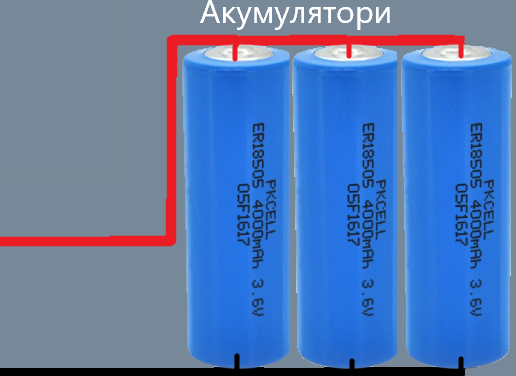
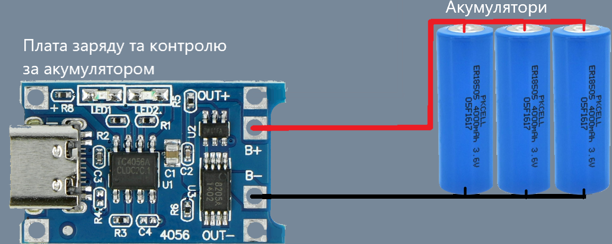
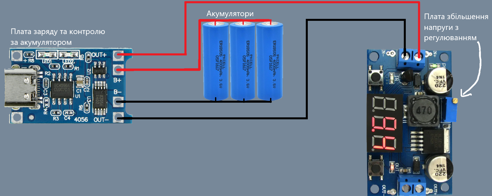

Для роботи вам будуть потрібні такі речі:
1. Паяльник
2. Дріт червоного та чорного кольору
3. Паяльне олово та флюс
4. Виключатель (не обов'язково)
5. Уважність щоб не спалити хату
 Спочатку потрібно розібратись де у акумуляторів плюсовий та мінусовий контакти, після чого взяти два дроти різних кольорів та припаяти вздовж до відповідних контактів (червоний до плюсів, чорний до мінусів) так щоб получилася батарея, після цього обов'язково заізолюйте контакти до наступного кроку щоб не сталося прямого замикання.
 Нам потрібно припаяти червоний дріт до контакту на платі що називається battery +, а чорний до контакту battery -.
Потрібно перевірити чи усе ми зробили правильно: ставимо наш блок на зарядку вашого мобільного телефону, і чекаємо поки лампочка загориться синім (в даному випадку акумулятори робочі та повністю заряджені що дозволяє нам продовжувати роботу).
